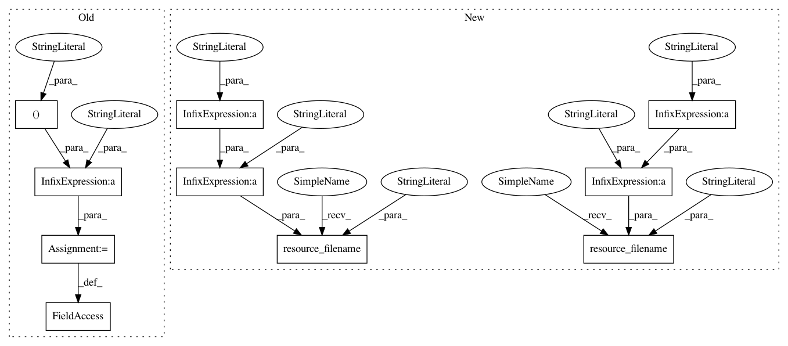

ade52a2d1afe22bdff0ac28b65e5b5cfdd03dd44,pynets/registration/register.py,DmriReg,__init__,#DmriReg#Any#Any#Any#Any#Any#Any#,343
Before Change
self.input_mni_mask = "%s%s%s%s" % (FSLDIR, "/data/standard/MNI152_T1_", vox_size, "_brain_mask.nii.gz")
self.wm_gm_int_in_dwi = "%s%s%s%s" % (self.reg_path_img, "/", self.t1w_name, "_wm_gm_int_in_dwi.nii.gz")
self.wm_gm_int_in_dwi_bin = "%s%s%s%s" % (self.reg_path_img, "/", self.t1w_name, "_wm_gm_int_in_dwi_bin.nii.gz")
self.input_mni_sched = "%s%s" % (FSLDIR, "/etc/flirtsch/T1_2_MNI152_2mm.cnf")
// Create empty tmp directories that do not yet exist
reg_dirs = [self.tmp_path, self.reg_path, self.anat_path, self.reg_path_mat, self.reg_path_warp,
self.reg_path_img]
After Change
self.vent_mask_t1w = "%s%s" % (self.reg_path_img, "/vent_mask_t1w.nii.gz")
self.mni_atlas = pkg_resources.resource_filename("pynets", "atlases/HarvardOxford-sub-prob-" + vox_size +
".nii.gz")
self.input_mni = pkg_resources.resource_filename("pynets", "templates/MNI152_T1_" + vox_size + ".nii.gz")
self.input_mni_brain = pkg_resources.resource_filename("pynets", "templates/MNI152_T1_" + vox_size +
"_brain.nii.gz")
self.input_mni_mask = pkg_resources.resource_filename("pynets", "templates/MNI152_T1_" + vox_size +
"_brain_mask.nii.gz")
self.wm_gm_int_in_dwi = "%s%s%s%s" % (self.reg_path_img, "/", self.t1w_name, "_wm_gm_int_in_dwi.nii.gz")
self.wm_gm_int_in_dwi_bin = "%s%s%s%s" % (self.reg_path_img, "/", self.t1w_name, "_wm_gm_int_in_dwi_bin.nii.gz")
// Create empty tmp directories that do not yet exist
In pattern: SUPERPATTERN
Frequency: 3
Non-data size: 10
Instances
Project Name: dPys/PyNets
Commit Name: ade52a2d1afe22bdff0ac28b65e5b5cfdd03dd44
Time: 2019-07-02
Author: dpisner@utexas.edu
File Name: pynets/registration/register.py
Class Name: DmriReg
Method Name: __init__
Project Name: dPys/PyNets
Commit Name: ade52a2d1afe22bdff0ac28b65e5b5cfdd03dd44
Time: 2019-07-02
Author: dpisner@utexas.edu
File Name: pynets/registration/register.py
Class Name: DmriReg
Method Name: __init__
Project Name: dPys/PyNets
Commit Name: ade52a2d1afe22bdff0ac28b65e5b5cfdd03dd44
Time: 2019-07-02
Author: dpisner@utexas.edu
File Name: pynets/registration/register.py
Class Name: FmriReg
Method Name: __init__
Project Name: dPys/PyNets
Commit Name: d84e95d2714d393bc042c5ed5d984d1b18ea46ad
Time: 2019-08-08
Author: dpisner@utexas.edu
File Name: pynets/registration/register.py
Class Name: DmriReg
Method Name: __init__